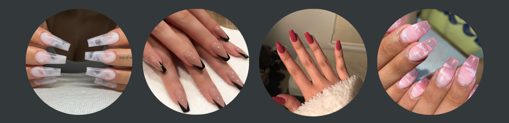

Acrylic nails

What does in consist of?
Acrylic nails are made out of a liquid powder and are being sculpted directly onto your nails. Most of the time this mixture will cover the entire nail and not just the nail bed. Now the thing with this liquid powder is that – the longer it is exposed to the air, the more it hardens. That is the reason why you always end up with hard, stiff, and long lasting nails.
Refill: Your natural nails will start to grow, and sooner or later, you will notice that your nails will require a refill. Rush to the salon every 3 weeks to get them as fresh as possible.
Removal: It’s the best if you don’t try this at index because women often injure themselves easily when removing them on their own. Just go to the salon and have your nail tech either file them down or soak them in acetone. Either way, they are professionals and they know what they are doing.
Pros:
Refills of Acrylic Nails is cheaper than any other nails & the refill is durable for around 6 months so you don’t have to get new set of acrylic nails more often.
Acrylic nails grow quickly.
Acrylic Nails usually last very long, approximately for 2 long months.
It doesn’t easily crack if it can properly be applied.
Cons:
Acrylic nails can be a little expensive based on the location you live in.
Drying the nails sometimes becomes boring as it takes 30-40 minutes to dry. But letting them dry is important.
Some salons are not well ventilated which results in the horrible smell of different nail polishes.
Acrylic nails are an extension on your natural nail. In order for them to be applied, your natural nail bed is filed down to create a rough surface for the glue to be able to adhere the nail extension to. Once this is done, acrylic liquid and powder are mixed together to create the acrylic that is applied on top to mould the artificial nail. This will be shaped and buffed, and then painted with either regular or gel polish.
Acrylic nails have been a popular choice due to the likes of Kylie Jenner and Gigi Hadid sporting the trend, not to mention that they make your nails look damn fierce. Although there are many positives to acrylic nails, such as length and longevity (they can last for up to 4 weeks), they can also have some damaging effects. The removal of acrylic nails can be somewhat time consuming, with them having to be soaked in acetone and then buffed off. As well as acetone making your nails dry and brittle, the buffing process can weaken your nails. This is something to think about when considering getting acrylic nails, plus once you start getting them you probably won’t want to stop!